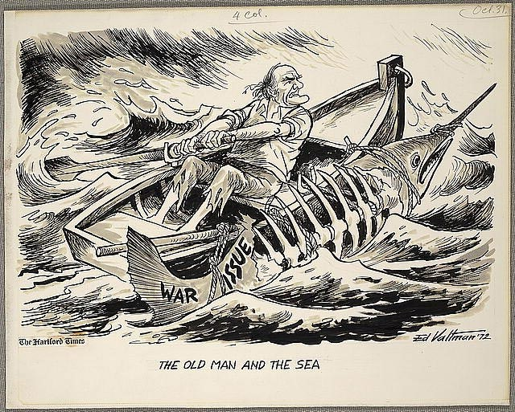

Benim bu sözlerden anladığım sonuna kadar mücadele etmek, tünelin büyük ihtimalle bir yere çıkmayacağını bile bile -başka bir yol yoksa- yılmadan kazmaya devam etmektir. Vurduğum her darbede ışığı görmek umudunu en üst seviyede hissetmek hayat felsefem olsun isterim. İsterim çünkü Hemingway bu cümleyi böyle etkileyici söyleyebildiyse yüreğinden damıtıp söylemiştir; fakat malum, hayata intihar ederek veda etmiş kendisi. Ben de çoğunlukla uygulayamadığım bu fikri ancak istemekle yetinebilirim. İstemek de iyi bir başlangıca benziyor zira.
Peki yenilmeyi bilmek diye bir kavram nereden geliyor o zaman? Belki de bu kavram müsabaka kültürüyle başladı. Avcılık toplayıcılıkla işe başlayan insanoğlu, öküzü ceylanı kim daha güzel avlıyor falan filan derken yarışmaya başladı. Bir taraf kazanan dolayısıyla iyi olur, diğer taraf vaya taraflar kimi zaman kötü kimi zamansa yok olurlar. Bu en basit tanımıdır yarışmanın. Yarışma kavramından günümüze kalansa biraz farklı. Günümüzde müsabaka deyince akla atletizm dahil futbol gibi oyunları da içeren avam uğraşları gelse de iş sektöründe ve diğer birçok ilişkide müsabaka ruhu bulunur. Bu ruh öyle ilgi çekicidir ki -avam uğraşı dememize rağmen- milyarlarca insanı peşine takar, taraftar eder, sömürür. Yenilmeyi bilmeye dönecek olursak, o bu zahirî uğraşlarda geçerliliğini büyük ölçüde yitirir. Çünkü bu tarz şovlar spektaküler davranışlar ister, söz gelimi yenilmeyi bilmeyen olay çıkaran oyuncular onların göz bebeğidir. Öyleyse yenilmeyi bilmek kavramı nerede varlığını sürdürüyor? Bence bu sınırlı bir kavramdır. Şöyleki insan hayat oyununun kurallarını sınırlarını bilmeli. Örneğin bir insan duvardan geçmeyi kafasına taksa, ilk deneyişinde kafasını vurur. Sonra bir kere daha kafasını vurduğunda anlamalıdır ki bu oyunun sınırıdır. Yenilmeyi bilmek buralarda devreye girmeli. Ancak yine de bu iddianın müsabaka formatında geçerliliği yoktur. Çünkü müsabakada genel kuralların yanında bir de rakiplerin birbiri üzerinde üstünlük kurma mücadelesi vardır. Burada yenilmek rakipten daha kötü olduğunu kabul etmek manasına gelir ki bu da yenilmeyi bilmeyi büyük bir hakarete dönüştürür. Aslında bu söz grubu her şey bittikten, kazanan kazandıktan, yenilen yenildikten sonra geçerlidir.
Yılmamak ve yalnızlık ilişkisi de bahse değer. Bir insanın destekçisi çok iken bir mücadeleyi vermesi daha kolaydır. Böyle durumlarda işler yolunda gittiğinde destek artar moraller yükselir, tam tersi olduğunda bazı terslikler bile destek sayesinde tolere edilebilir. Doğal olarak, sürekli kaybetme durumu belirdiğinde ise çoğunda destek eriyerek kaybolur. Bir insanın ya da geniş düşünürsek bir grubun bu nitelikte destek elde etmesi için özel koşullara sahip olması ve uygun durumlar içinde bulunması gerekir. Bu koşullar ve durumlar örneğin çıkar ilişkisi olabildiği gibi sempati duyma benzeri durumlar olabilir veya bu tip grupları güçlü gören çapsız kişiliklerin kuru kalabalığı da olabilir. Sıkı bir gönül bağı sonucu var olan destek dışında diğerleri niteliksiz nicelikler etiketine mahkûmdur.
Diğer bir model olarak destekçisi olmayan veya azınlık durumunda kalan mücadeleler vardır. Bilhassa böyle grupların karşısında duran başka zümreler olduğunda ortaya destansı aksiyonlar çıkması muhtemeldir.
İnsanların da ekserisi seyir ve tanıklık bağlamında bu ikinci mücadeleyi tercih eder. Ernest Hemingway de Yaşlı Adam’ını bu şekilde yalnızlığın içine yönlendirmiş, keskin ve sade cümleleriyle kurduğu macerayı kısa tutarak okuma bilen her insana bir nimet olarak lütfetmiştir.